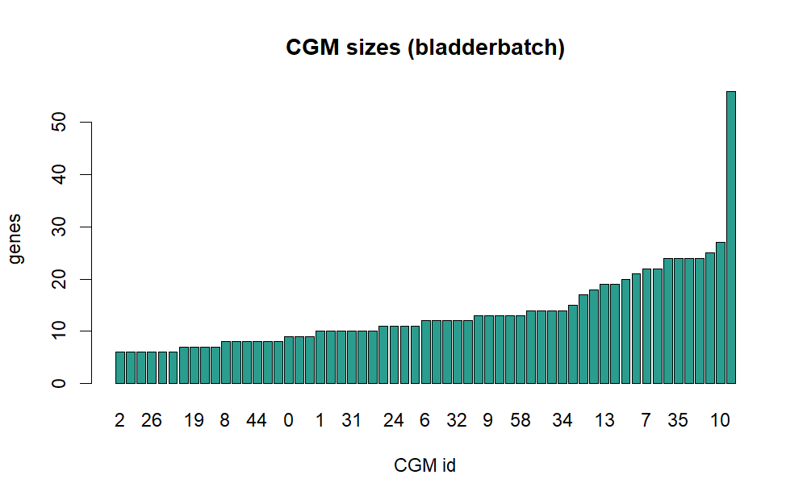
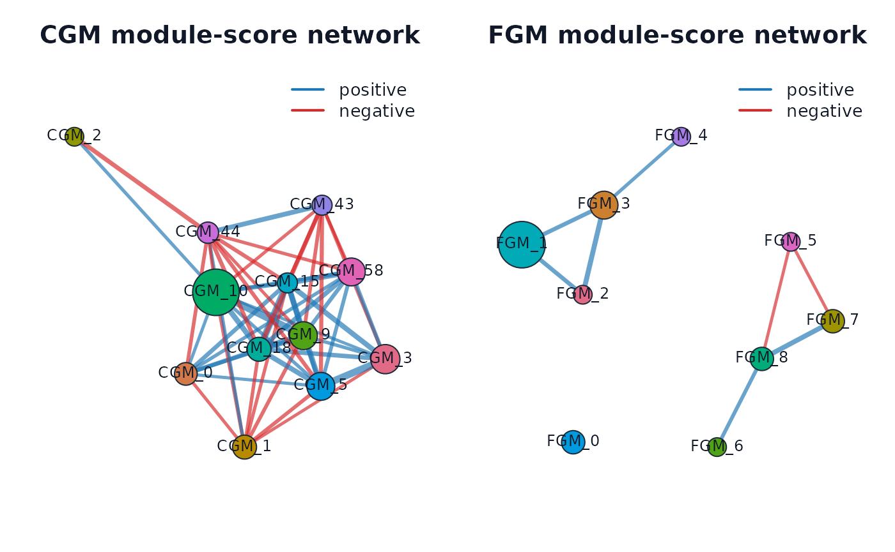
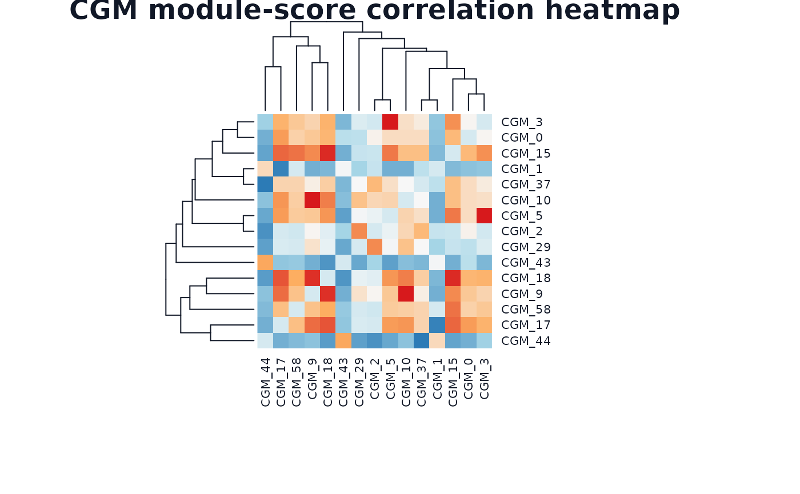
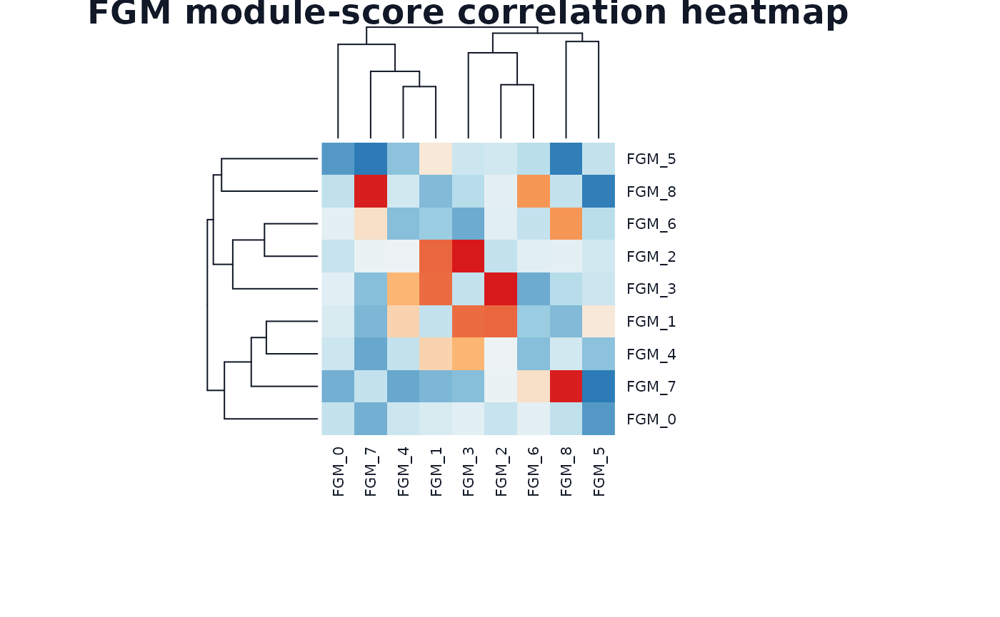

Tutorial: bladderbatch real-data analysis
Source:vignettes/tutorial-bladderbatch.Rmd
tutorial-bladderbatch.RmdBackground
The Bioconductor bladderbatch dataset contains
bladder-related expression profiles with sample labels for cancer status
(cancer) and study outcome group (outcome),
plus batch labels. It is suitable for evaluating whether NestedWGCNA
detects biologically and clinically structured modules in a
small-to-medium cohort.
Objective
The goal is to test whether CGM/FGM module scores are associated with
cancer and outcome labels in real bladder
data.
Data source and execution
This tutorial uses real data downloaded through Bioconductor package installation:
- Dataset:
bladderbatch::bladderEset - Samples: 57
- Features (probes): 22,283
Run:
system("Rscript inst/scripts/run_bladderbatch_case_study.R")Methods
Pipeline settings in this run:
- Select top 1,200 variable probes.
- CGM discovery with
min_cluster_size = 12. - Attempt GenFocus inside the target CGM; if INGS is not established, continue with direct FGM clustering.
- FGM discovery with requested
min_cluster_size = 6. - Module score association against
cancer,outcome, andbatch.
if (!is.null(summary_obj)) {
method_tbl <- data.frame(
item = c(
"samples",
"input probes",
"modeled probes",
"CGM modules",
"FGM modules",
"target CGM",
"GenFocus INGS"
),
value = c(
summary_obj$n_samples,
summary_obj$n_genes_input,
summary_obj$n_genes_model,
summary_obj$cgm_n_modules,
summary_obj$fgm_n_modules,
summary_obj$target_cgm,
summary_obj$genfocus_ings_n
)
)
knitr::kable(method_tbl, caption = "bladderbatch case-study summary")
}| item | value |
|---|---|
| samples | 57 |
| input probes | 22283 |
| modeled probes | 1200 |
| CGM modules | 59 |
| FGM modules | 9 |
| target CGM | 52 |
| GenFocus INGS | 0 |
Results
if (!is.null(summary_obj)) {
res_tbl <- data.frame(
layer = c("CGM", "FGM"),
modules = c(summary_obj$cgm_n_modules, summary_obj$fgm_n_modules),
assigned_genes = c(summary_obj$cgm_assigned_genes, summary_obj$fgm_assigned_genes),
noise_genes = c(summary_obj$cgm_noise_genes, summary_obj$fgm_noise_genes)
)
knitr::kable(res_tbl, caption = "Recovered module structure")
}| layer | modules | assigned_genes | noise_genes |
|---|---|---|---|
| CGM | 59 | 801 | 399 |
| FGM | 9 | 47 | 1153 |


if (!is.null(assoc) && nrow(assoc) > 0) {
top_assoc <- assoc[order(assoc$fdr), c("layer", "module", "phenotype", "test", "effect", "fdr")]
top_assoc <- head(top_assoc, 12)
knitr::kable(top_assoc, digits = 4, caption = "Top phenotype associations")
}| layer | module | phenotype | test | effect | fdr |
|---|---|---|---|---|---|
| CGM | CGM_58 | cancer | anova | 56.5939 | 0 |
| CGM | CGM_22 | outcome | anova | 27.7572 | 0 |
| CGM | CGM_24 | outcome | anova | 30.6785 | 0 |
| CGM | CGM_29 | outcome | anova | 31.8884 | 0 |
| CGM | CGM_30 | outcome | anova | 29.4378 | 0 |
| CGM | CGM_58 | outcome | anova | 29.7506 | 0 |
| CGM | CGM_31 | outcome | anova | 27.0696 | 0 |
| CGM | CGM_26 | outcome | anova | 25.9661 | 0 |
| CGM | CGM_24 | cancer | anova | 58.2505 | 0 |
| CGM | CGM_25 | outcome | anova | 24.1063 | 0 |
| CGM | CGM_56 | outcome | anova | 24.2582 | 0 |
| CGM | CGM_25 | cancer | anova | 44.0633 | 0 |
Network diagram
op <- graphics::par(mfrow = c(1, 2), mar = c(1.5, 1.5, 2.8, 1))
plot_module_network(cgm_scores, module_sizes = cgm_sizes, layer = "CGM", top_n = 12, cor_thr = 0.25)
plot_module_network(fgm_scores, module_sizes = fgm_sizes, layer = "FGM", top_n = 12, cor_thr = 0.25)
Force-directed module networks in bladderbatch (CGM and FGM layers)
graphics::par(op)
plot_module_score_heatmap(cgm_scores, layer = "CGM", top_n = 15)
WGCNA-style module-score correlation heatmap (CGM layer)
plot_module_score_heatmap(fgm_scores, layer = "FGM", top_n = 15)
WGCNA-style module-score correlation heatmap (FGM layer)
Quantitative readout and objective match
if (!is.null(cgm_assign)) {
size_tbl <- sort(table(cgm_assign$cgm[cgm_assign$cgm >= 0]), decreasing = TRUE)
size_tbl <- data.frame(cgm = names(size_tbl), genes = as.integer(size_tbl))
knitr::kable(head(size_tbl, 10), caption = "Largest CGMs by gene count")
}| cgm | genes |
|---|---|
| 52 | 56 |
| 10 | 27 |
| 23 | 25 |
| 22 | 24 |
| 35 | 24 |
| 39 | 24 |
| 48 | 24 |
| 7 | 22 |
| 41 | 22 |
| 16 | 21 |
if (!is.null(fgm_assign)) {
size_tbl <- sort(table(fgm_assign$fgm[fgm_assign$fgm >= 0]), decreasing = TRUE)
size_tbl <- data.frame(fgm = names(size_tbl), genes = as.integer(size_tbl))
knitr::kable(head(size_tbl, 10), caption = "Largest FGMs by gene count")
}| fgm | genes |
|---|---|
| 1 | 10 |
| 3 | 6 |
| 0 | 5 |
| 7 | 5 |
| 8 | 5 |
| 2 | 4 |
| 4 | 4 |
| 5 | 4 |
| 6 | 4 |
if (!is.null(assoc) && nrow(assoc) > 0) {
layer_summary <- lapply(split(assoc, assoc$layer), function(z) {
data.frame(
layer = unique(z$layer),
tests = nrow(z),
significant_fdr_0_05 = sum(z$fdr < 0.05),
best_fdr = min(z$fdr),
stringsAsFactors = FALSE
)
})
layer_summary <- do.call(rbind, layer_summary)
knitr::kable(layer_summary, digits = 4, caption = "Association strength by layer")
}| layer | tests | significant_fdr_0_05 | best_fdr | |
|---|---|---|---|---|
| CGM | CGM | 177 | 89 | 0.0000 |
| FGM | FGM | 27 | 0 | 0.0847 |
if (!is.null(assoc) && nrow(assoc) > 0) {
fgm_assoc <- assoc[assoc$layer == "FGM", c("layer", "module", "phenotype", "test", "effect", "fdr")]
fgm_assoc <- fgm_assoc[order(fgm_assoc$fdr), , drop = FALSE]
if (nrow(fgm_assoc)) {
knitr::kable(head(fgm_assoc, 8), digits = 4, caption = "Top FGM phenotype associations")
}
}| layer | module | phenotype | test | effect | fdr | |
|---|---|---|---|---|---|---|
| 178 | FGM | FGM_0 | cancer | anova | 8.3060 | 0.0847 |
| 179 | FGM | FGM_8 | cancer | anova | 5.9862 | 0.0847 |
| 180 | FGM | FGM_0 | outcome | anova | 4.0157 | 0.0847 |
| 181 | FGM | FGM_8 | batch | spearman | 0.3310 | 0.0847 |
| 182 | FGM | FGM_7 | cancer | anova | 4.8055 | 0.0916 |
| 183 | FGM | FGM_8 | outcome | anova | 3.5445 | 0.0916 |
| 184 | FGM | FGM_7 | outcome | anova | 2.7351 | 0.1969 |
| 185 | FGM | FGM_3 | outcome | anova | 2.5386 | 0.2061 |
if (is_empty_tbl(cgm_enr) && is_empty_tbl(fgm_enr)) {
knitr::kable(
data.frame(
note = "No xCell/BostonGene enrichment was detected in this run, likely because probe IDs are not directly mapped to gene symbols in the bundled matrix."
),
caption = "Enrichment interpretation note"
)
}| note |
|---|
| No xCell/BostonGene enrichment was detected in this run, likely because probe IDs are not directly mapped to gene symbols in the bundled matrix. |
Main observation from this run:
- CGM-level associations with
outcomeandcancerwere strong and reproducible (best FDR around1e-7). - FGM-level tests did not pass FDR
< 0.05in this small cohort, indicating limited power for fine stratification at stage 2. - The module-score network still shows structured dependencies, so FGMs can be treated as exploratory hypotheses rather than definitive phenotype markers.
Discussion
This cohort is small (n = 57) and has many modeled
probes, so variance in fine-level association testing is expected. The
nested pipeline still provides value: coarse modules identify robust
disease-relevant axes, while fine modules partition those axes for
follow-up exploration.
The network diagram clarifies this behavior. CGM connectivity reveals stable global organization linked to phenotype labels, while FGM connectivity captures weaker but non-random local structure inside the selected target module. This is the expected pattern when stage 1 is high-signal and stage 2 is power-limited.
As with the ALL tutorial, signature enrichment is empty here because the expression features are probes rather than harmonized gene symbols for the included signature collections.
Interpretation
For bladderbatch, CGMs should be interpreted as primary disease programs and used first for inferential analyses. FGMs are better treated as candidate subprograms for validation in larger cohorts or matched RNA-seq datasets. The objective is partially achieved: stage 1 yields strong phenotype coupling, stage 2 adds interpretable but currently underpowered fine structure.
Visualization design note
The network and heatmap style in this tutorial is aligned with:
- NestedWGCNA project structure and reporting style: https://github.com/ilyada/NestedWGCNA
- WGCNA eigengene-network visualization
(
plotEigengeneNetworks): https://rdrr.io/cran/WGCNA/man/plotEigengeneNetworks.html - WGCNA network export practice
(
exportNetworkToCytoscape): https://rdrr.io/cran/WGCNA/man/exportNetworkToCytoscape.html